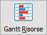
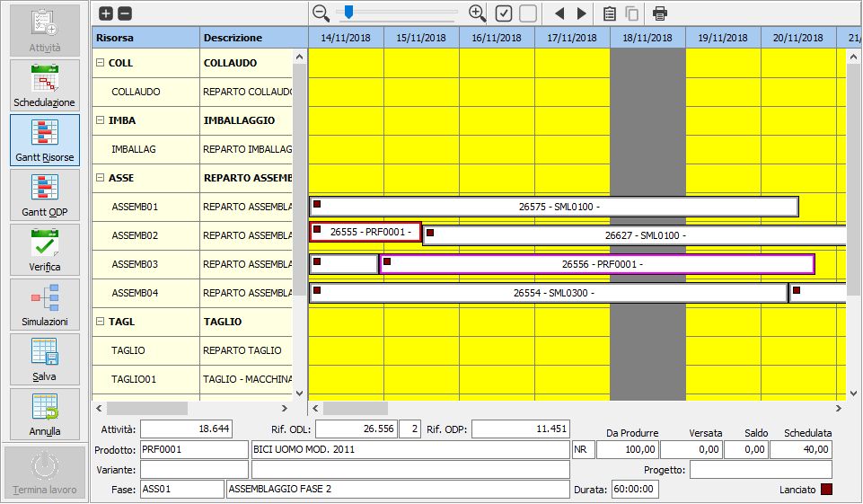
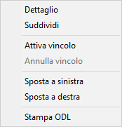
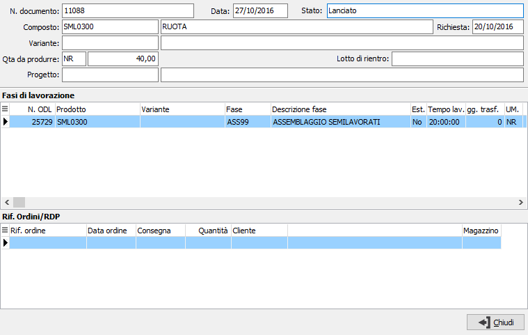
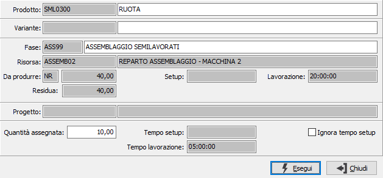

è possibile aprire o chiudere tutti i gruppi contemporaneamente; agendo
sul +/- di fianco al reparto è possibile aprire/chiudere il singolo reparto
in modo da analizzarlo singolarmente.
è possibile aprire o chiudere tutti i gruppi contemporaneamente; agendo
sul +/- di fianco al reparto è possibile aprire/chiudere il singolo reparto
in modo da analizzarlo singolarmente.Gantt risorse

Questa funzionalità rappresenta lo strumento di manutenzione della schedulazione automatica. La rappresentazione (in forma di Gantt) è impostata per reparto/risorsa e riporta le attività legate agli ODL sugli orizzonti temporali, di schedulazione e successivo visualizzati in colori differenti. Attraverso tale funzione è possibile:visualizzare l’attuale piano di schedulazione e per ciascuna attività il dettaglio delle attività collegate
spostare le attività in avanti o indietro sull'orizzonte temporale o su risorse alternative compatibili con il ciclo di produzione
frazionare un attività in più parti ad esempio nel caso in cui si intenda abbinarla a risorse diverse
vincolare le attività in modo che tali attività non possano essere rielaborata automaticamente (a meno che non venga effettuata una rielaborazione totale)
La visualizzazione del gantt è completamente personalizzabile nei colori, nelle dimensioni di default compreso quanto deve essere visualizzato sopra i singoli ODL, tramite la specifica Configurazione gantt.

La sezione di sinistra riporta i reparti con all'interno le relative
risorse e tramite i pulsanti
è possibile aprire o chiudere tutti i gruppi contemporaneamente; agendo
sul +/- di fianco al reparto è possibile aprire/chiudere il singolo reparto
in modo da analizzarlo singolarmente.
La sezione di destra contiene le attività riportate sugli orizzonti temporali; selezionando una singola attività vengono evidenziate sul gantt le attività collegate (le barre si alzano ed il colore del bordo cambia) e compaiono, nel pannello inferiore, i dati relativi all'attività stessa con l'indicazione dello stato dell'attività (quadrato in basso a destra) che compare anche sulla barra del gantt; inoltre se l'attività risulta versata compare, sul gantt, una barra di completamento all'interno della barra dell'attività in basso.
Sopra la sezione di destra è presente la barra dello zoom ed una barra di pulsanti; le stesse funzionalità della barra dei pulsanti sono richiamabili dal menù del tasto destro del mouse cliccando sopra un'attività all'interno del gantt.
 |
La barra dello zoom consente di aumentare o ridurre il livello di zoom delle colonne del calendario; i pulsanti consentono un aumento/diminuzione del 10%, tramite la barra si può andare dal 10% di riduzione fino al 800% di ingrandimento.
I pulsanti consentono di vincolare/annullare il vincolo ad una attività: se l’attività risulta vincolata non può essere rielaborata automaticamente da schedulazioni successive a meno che non venga utilizzata l'opzione di rielaborazione totale. |
|
I pulsanti consentono di anticipare o posticipare un attività; se anticipata, l’attività viene spostata indietro nell’orizzonte temporale (compatibilmente con i vincoli di fase); se posticipata, l’attività viene spostata avanti nell’orizzonte temporale (compatibilmente con i vincoli di fase) e può finire nell'orizzonte successivo, in questo caso al salvataggio sarà tolto il flag di schedulazione. Lo spostamento di una attività può essere effettuato anche trascinando la stessa sul gantt in avanti o indietro; è possibile spostare con lo stesso metodo anche un'attività da una risorsa ad un'altra compatibile; in entrambi i casi se non sarà possibile lo spostamento verrà dato un messaggio ed annullato lo spostamento stesso. |
|
|
 Il pulsante mostra il dettaglio dell'attività; la stessa funzionalità è data anche dal doppio clic del mouse sull'attività. La finestra mostra partendo dall'ODP tutti gli ODL collegati e relativi riferimenti ordini/RDP collegati all'attività su si era posizionati; nel dettaglio delle fasi compaiono anche le fasi esterne (evidenziate in blu) e la fase relativa all'attività corrente appare selezionata. |
|
 Il pulsante consente di suddividere un’attività: è possibile frazionare un attività in due parti ad esempio nel caso in cui si intenda abbinarla a risorse diverse, in questo caso deve essere suddivisa e poi spostata la parte suddivisa su di una risorsa compatibile. Se in configurazione unità produttive il parametro "Non suddividere ODL con eventi aperti" è spuntato, saranno suddivisibili solo gli ODL per cui non esistono eventi di produzione aperti. La finestra di suddivisione mostra i dati dell'attività e richiede una quantità che dovrà essere minore del residuo; se si desidera possono essere ignorati i tempi di setup, spuntando la relativa casella; questa opzione è valida se l'attività prevede dei tempi di setup che possono rimanere tutti sull'attività base e non essere contemplati dall'attività suddivisa. |
|
Il pulsante consente di stampare l'ODL relativo all'attività selezionata. è possibile effettuare la stampa includendo o meno le note tecniche eventualmente derivanti dalla scheda tecnica. Nella stampa dell'ODL viene stampato il contatore dell’attività come codice a barre dell’attività stessa (come accade per ODP e ODL); tale barcode può essere utilizzato per ricercare gli ODL all’interno di OS1BMJob. |